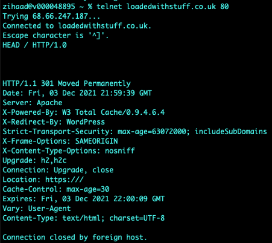
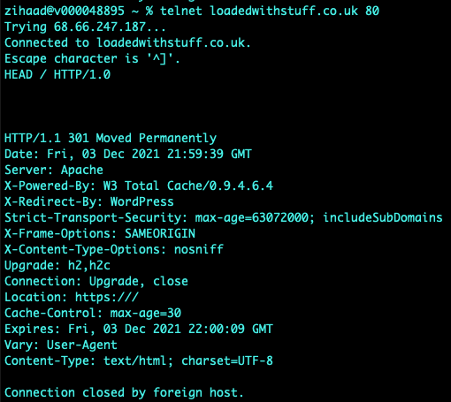

NISM - Discussion Collaboration

Collaborative Learning Discussion 1
Read Glisson, W., Andel, T., McDonald, T., Jacobs, M., Campbell, M. & Mayr, J. (2015) Compromising a Medical Mannequin. Healthcare Information Systems and Technology (Sighealth).
Answer the following discussion questions:
- What are the major threats and vulnerabilities discussed in the paper?
- How would you mitigate against these?
You should demonstrate that you understand the topic covered and ensure you use references to academic literature (including journals, books, and reports)
Your initial posting should respond to the question and be at least 200 words long. Your initial post should be labelled "initial post".
Initial Post
The healthcare industry, as with most industries is becoming more digitised in the world we live in today. Digitisation and wireless connectivity of devices provides the opportunity for potential cyber-attacks. The paper written by Glisson et al. (2015), “Compromising a Medical Mannequin” provides insights to threats and vulnerabilities to healthcare systems and medical devices as well as conducting an experiment. The aim and objective of the experiment was to compromise a mannequin system by identifying vulnerable components such as the network security solution and the network protocol (Glisson et al, 2015). These components were breached using brute-force, DOS (Denial of Service) and security control attacks. Other major threats and vulnerabilities discussed include the following:
- Not capturing or logging security-based incidents or failures detected on medical devices (Fu and Blum, 2013).
- Data (device pins) being passed through the network in clear text as indicated in the research performed by Li et al. (2014) on glucose monitors.
- Unencrypted RF-transmissions between devices and programming units for pacemakers allowing hackers to eavesdrop and extract PII (Personally Identifiable Information) as highlighted by Halperin et al. (2008)
Various mitigation techniques for the above-mentioned threats and vulnerabilities exist in the industry today, these include:
- Next Generation Firewalls (NGFW’s) which play a vital role in protecting against sophisticated threats as well as DOS attacks (Soewito & Andhika, 2019). Some NGFW’s have advance features such as an IPS (Intrusion Prevention System) which are able to detect, prevent and log attempts (Check Point, 2021).
- Protection against brute-force attacks include strong password policies, MFA (Multi-Factor Authentication), limitation of failed login attempts, implementation of user lockouts, use of Captcha as well as continuous log monitoring amongst others. (Saito et al, 2016)
- Encryption is also key when data is being transferred across networks, however for medical devices that uses batteries, encryption can reduce battery life (Williams & Woodward, 2015)
- And lastly physical access to medical devices, if the devices are not easily accessible (i.e., locked in a secure place) hackers may be deterred.
In conclusion, cybersecurity threats and vulnerabilities are very similar to other networking systems, the key difference is that in a medical environment the safety of a patient is at risk (Williams & Woodward, 2015). While the above technologies and techniques are effective, they cannot offer complete protection. Cybersecurity awareness training among medical staff also plays a vital role.
List of References
B. Soewito & C. E. Andhika. (2019) ‘Next Generation Firewall for Improving Security in Company and IoT Network’, 2019 International Seminar on Intelligent Technology and Its Applications 2021(1): 205-209. Available from: https://sci-hub.se/10.1109/ISITIA.2019.8937145 [Accessed 13 November 2021]
Check Point (2021) What is a Next Generation Firewall (NGFW)? https://www.checkpoint.com/cyber-hub/network-security/what-is-next-generation-firewall-ngfw/ [Accessed 13 November 2021].
Fu, K. & Blum, J. (2013) Controlling for Cybersecurity Risks of Medical Device Software. Communications of the ACM 56(10): 35-37. Available from: https://www.researchgate.net/publication/262241251_Controlling_for_Cybersecurity_Risks_of_Medical_Device_Software [Accessed 13 November 2021].
Glisson, W., Andel, T., Mcdonald, J., Jacobs, M., Campbell, M. & Mayr, J. (2015). Compromising a Medical Mannequin. Available from: https://www.researchgate.net/publication/281487935_Compromising_a_Medical_Mannequin [Accessed 12 November 2021].
Halperin, D., Heydt-Benjamin, T. S., Ransford, B., Clark, S. S., Defend, B., Morgan, W., Fu, K., Kohno, T., Maisel, W. H. (2008) ‘Pacemakers and Implantable Cardiac Defibrillators: Software Radio Attacks and Zero-Power Defenses’, IEEE Symposium on Security and Privacy. Oakland, CA, 18-22 May 2008. USA: IEEE. Available from: https://ieeexplore.ieee.org/abstract/document/4531149 [Accessed 13 November 2021].
Li, C., Zhang, M., Raghunathan, A., & Jha, N. (2014) Security and Privacy for Implantable Medical Devices. 1st ed. New York: Springer publishing. Available from: https://www.springerprofessional.de/en/attacking-and-defending-a-diabetes-therapy-system/1823450 [Accessed 13 November 2021].
Saito, S., Maruhashi, K., Takenaka, M., & Torii, S. (2016). TOPASE: Detection and Prevention of Brute Force Attacks with Disciplined IPs from IDS Logs. Journal of Information Processing, 24(2): 217–226. Available from: doi:10.2197/ipsjjip.24.217 [Accessed 14 November 2021].
Williams, P. A., & Woodward, A. J. (2015). Cybersecurity vulnerabilities in medical devices: a complex environment and multifaceted problem. Medical devices. Health Informatics Journal, 25(2): 305–316. Available from: https://journals.sagepub.com/doi/pdf/10.1177/1460458217706184 [Accessed 14 November 2021].
Click here to download this post as a Word Document The following post is a summary post based on peer responses & tutor feedback received during the discussion. Peer Response by Edward van Biljon Peer Response by Haseeb Abdulhak Peer Response by Aldo Madrid Tutor Feedback by Beran NecatSummary Post
It is not uncommon that healthcare industries around the world are adopting technologies through the use of IoMT (Internet of Medical Things) devices to provide better services to patients and medical professionals. The absence of security or poor implementation of security best practices in many of these devices leaves them vulnerable to attacks and access to patient data (Ondiege et al, 2016). This is confirmed by a paper written by Glisson et al. (2015) where a mannequin system was compromised by a group of inexperienced university students.
While the above mentioned attacks are common; effective mitigation techniques do exist. These include clean-desk policies (Biljon, 2021), impersonation attacks (where an attackers pretends to be an employee), updated and hardening of operating systems, effective password policies and the implementation of zero-trust networks (Abdulhak, 2021), views that the writer strongly agrees with. In addition medical devices must adopt robust authentication mechanisms (Madrid, 2021) as well as comply with the Health Insurance Portability and Accountability Act (HIPAA, 1996) which aims to protect medical records and personal information (Sametinger et al, 2015).
Furthermore, Gollakota et al. (2011) suggests an isolated device that acts as a shield to prevent direct access to medical devices, which could possibly prevent DOS attacks (Necat, 2021), a perspective the writer appreciates and agrees with. Similar to networking where CyberArk is used to control access to devices; however this technology is based on radio frequencies rather than networking protocols (CyberArk, 2021).
In any industry, surveillance, monitoring, alerting and logging is vitally important in the detection and prevention of cyber-attacks. Campbell (2016) mentions that if one cannot see what is happening on systems (real-time monitoring) they cannot effectively manage it. In closing, one should adopt a holistic approach to cybersecurity practices in a healthcare setting involving multidisciplinary groups like system administrators, policymakers, medical professionals and cybersecurity experts (Tully et al, 2020).
List of References
Abdulhak, H. (2021). ’Collaborative Learning Discussion 1’. Peer response submitted to University of Essex Online for [NISM_PCOM7E November 2021] Initial Post by Zihaad Khan. Available from: https://www.my-course.co.uk/mod/hsuforum/discuss.php?d=285238 [Accessed 27 November 2021].
Biljon, V, E. (2021). ’Collaborative Learning Discussion 1’. Peer response submitted to University of Essex Online for [NISM_PCOM7E November 2021] Initial Post by Zihaad Khan. Available from: https://www.my-course.co.uk/mod/hsuforum/discuss.php?d=285238 [Accessed 27 November 2021].
Campbell, T. (2016) Practical Information Security Management. 1st ed. APRESS.
CyberArk (2021). Privileged Access Manager. Available from: https://www.cyberark.com/products/privileged-access-manager/ [Accessed 27 November 2021].
Glisson, W., Andel, T., Mcdonald, J., Jacobs, M., Campbell, M. & Mayr, J. (2015). Compromising a Medical Mannequin. Available from: https://www.researchgate.net/publication/281487935_Compromising_a_Medical_Mannequin [Accessed 27 November 2021].
Gollakota, S., Hassanieh, H., Ransford, B., Katabi, D., & Fu, K. (2011) ‘They Can Hear Your Heartbeats: Non Invasive Security for Implantable Medical Devices’, ACM SIGCOMM 2011 Conference on Applications, Technologies, Architectures, and Protocols for Computer Communications. Toronto, Canada, 15-19 August. Available from: https://dl.acm.org/doi/pdf/10.1145/2018436.2018438 [Accessed 27 November 2021].
HIPPA (1996) Health Insurance Portability and Accountability Act of 1996. Available from: https://www.healthit.gov/sites/default/files/rules-regulation/health-insurance-portability.pdf [Accessed 27 November 2021].
Madrid, A. (2021). ’Collaborative Learning Discussion 1’. Peer response submitted to University of Essex Online for [NISM_PCOM7E November 2021] Initial Post by Zihaad Khan. Available from: https://www.my-course.co.uk/mod/hsuforum/discuss.php?d=285238 [Accessed 27 November 2021].
Necat, B. (2021). ’Collaborative Learning Discussion 1’. Peer response submitted to University of Essex Online for [NISM_PCOM7E November 2021] Initial Post by Zihaad Khan. Available from: https://www.my-course.co.uk/mod/hsuforum/discuss.php?d=285238 [Accessed 27 November 2021].
Sametinger, J., Rozenblit, J., Lysecky, R., & Ott, P. (2015). Security challenges for medical devices. Communications of the ACM, 58(4): 74–82. Available from: https://dl.acm.org/doi/fullHtml/10.1145/2667218 [Accessed 27 November 2021].
Tully, J., Selzer, J., Phillips, J. P., O'Connor, P., & Dameff, C. (2020). Healthcare Challenges in the Era of Cybersecurity. Health security, 18(3): 228–231. Available from: https://doi.org/10.1089/hs.2019.0123 [Accessed 27 November 2021].
Click here to download this post as a Word DocumentCollaborative Learning Discussion 2
Discuss the results of your scans from this activity in Unit 3 with other students and your tutor by posting your responses to the forum. You can share individual results or submit as a team.
You should demonstrate that you understand the topic covered and ensure you use references to academic literature (journals, books, reports, etc.).
Your initial posting should respond to the question and be at least 200 words long. The initial post should be labelled ‘Initial Post’.
Initial Post
A scanning task was performed on an assigned website called “https://loadedwithstuff.co.uk” from South Africa - Johannesburg with basic scanning tools such as traceroute, mtr, dig, nslookup, whois, nmap and telnet. Various results were obtained and analysed as indicated in the screenshots attached.
tcptraceroute on port 80 was used on an Apple MacBook computer which yielded 13 hops to the destination, this was confirmed by executing an mtr (mytraceroute) which indicated 30% packet loss from hop 2 to hop 3. It was observed that the largest delay was from South Africa to London, with a round trip time (RTT) for a packet increasing from 6.9ms to 179.3ms (hop 7) respectively. The average delay for hop 7 was 179.2ms. This delay is expected as the connectivity average latency is around 140ms if SEACOM cables are used as a transport medium between the two countries (SEACOM, 2021). Name servers translate domain names into IP addresses or vice versa (A2 Hosting, 2021). The name servers (NS) identified were ns1.a2hosting.com, ns2.a2hosting.com, ns3.a2hosting.com and ns4.a2hosting.com; obtained by utilising the dig command. The online whois tool was used to obtain the registered contact details (various contacts at a2hosting.com) as indicated in the screenshots attached. The mail record (mail.loadedwithstuff.co.uk) was identified using nslookup. The website was found to be hosted by A2HOSTING in Amsterdam, Netherlands using the hosting checker online tool (Hosting Checker, 2021).
In addition, nmap was used to determine open ports, with the tools mentioned above it is relatively easy for attackers to fingerprint servers and launch attacks on the protocols identified (McNab, 2017). For example, knowing that port 80 is currently open – one can execute the telnet command and issue a HEAD / HTTP/1.0 request – this reveals that the server is running Apache while nmap reveals a PostgreSQL database installed. No issues were observed in obtaining the above-mentioned results.


 

List of References
A2 Hosting (2021) Nameservers: What Are They And How Do They Work? Available from: https://www.a2hosting.com/blog/what-are-nameservers/ [Accessed 01 December 2021].
Hosting Checker (2021) Hosting Checker Tool. Available from: https://hostingchecker.com [Accessed 01 December 2021].
McNab, C. (2017) Network Security Assessment: Know Your Network. 3rd ed. O'Reilly Media.
SEACOM (2021) PoP Latency Matrix. Available from: https://latency.seacom.com [Accessed 01 December 2021].
Click here to download this post as a Word Document The following post is a summary post based on peer responses received during the discussion. Peer Response by Michael Geiger Peer Response by Ying Chan Peer Response by Edward van Biljon Peer Response by Jonathan Callaghan Peer Response by Austin Mundy Peer Response by Kingsley OnyeemeosiSummary Post
Technology in general is a world of its own that will never stand still, so too are security technologies continuously evolving. Two security technologies namely packet filtering firewalls as well as Web Application Firewalls (WAF’s) were discussed in an Initial Post by the writer. Packet filtering firewalls are still being used in organisations today and in some cases tightly integrated with network devices (Melanson, 2014), despite its inability to store state information or inspect the payload of a packet (Andress, 2014). WAF’s also play a vital role in protecting organisations publicly accessible assets, a view agreed by Callaghan (2021), Mundy (2021) and Onyeemeosi (2021).
Clincy and Shahriar (2018) suggests that the benefits of WAF’s certainly outweigh the disadvantages, making WAF’s paramount in protecting internet facing applications of the 21st century. Gieger (2021) highlights the importance of WAF’s and their types of detection i.e., blacklist and whitelist as well as contrasting each of them, a perspective the writer appreciates and agrees with.
In contrast, Chan (2021) mentions that WAF’s cannot offer protection to all layer 7 type attacks referencing the use case of blind-SQL injection. According to Dhiraj (2019) blind-SQL injection attacks can bypass a WAF’s regular expression, a viewpoint the writer agrees with. This is supported by Dorai and Kannan (2011) who believe that writing secure code is one way of preventing SQL injection attacks.
Biljon (2021) recommends that access to WAF’s should be integrated with Active Directory Federation Services (ADFS) as well as Multifactor Authentication (MFA) making it difficult for attackers to brute force, an excellent suggestion the writer agrees with. Furthermore, organisations should strive to implement these integrations in an automated way sooner rather than later.
Implementing security technologies in organisations has become imperative to protect network and information assets. A holistic approach should be considered when implementing security technologies which include mandatory security training and awareness i.e., a branch of the human factor in cybersecurity.
List of References
Andress, J. (2014). The Basics of Information Security, Understanding the Fundamentals of InfoSec in Theory and Practice. 2nd ed. Massachusetts: Syngress Publishing. Available from: https://doi.org/10.1016/C2013-0-18642-4 [Accessed 30 September 2021].
Biljon, V, E. (2021). ’Collaborative Learning Discussion 2’. Peer response submitted to University of Essex Online for [LCYS_PCOM7E August 2021] Initial Post by Zihaad Khan. Available from: https://www.my-course.co.uk/mod/hsuforum/discuss.php?d=275575 [Accessed 30 September 2021].
Callaghan, J. (2021). ’Collaborative Learning Discussion 2’. Peer response submitted to University of Essex Online for [LCYS_PCOM7E August 2021] Initial Post by Zihaad Khan. Available from: https://www.my-course.co.uk/mod/hsuforum/discuss.php?d=275575 [Accessed 30 September 2021].
Chan, Y. (2021). ’Collaborative Learning Discussion 2’. Peer response submitted to University of Essex Online for [LCYS_PCOM7E August 2021] Initial Post by Zihaad Khan. Available from: https://www.my-course.co.uk/mod/hsuforum/discuss.php?d=275575 [Accessed 30 September 2021].
Dhiraj, M. (2019) SQL Injection Bypassing WAF. OWASP. Available from: https://owasp.org/www-community/attacks/SQL_Injection_Bypassing_WAF [Accessed 30 September 2021].
Dorai, R. & Kannan, V. (2011) SQL injection-database attack revolution and prevention. Journal of International Commercial Law and Technology 6(4): 224-231. Available from: https://citeseerx.ist.psu.edu/viewdoc/download?doi=10.1.1.994.1257&rep=rep1&type=pdf [Accessed 01 October 2021].
Gieger, M. (2021). ’Collaborative Learning Discussion 2’. Peer response submitted to University of Essex Online for [LCYS_PCOM7E August 2021] Initial Post by Zihaad Khan. Available from: https://www.my-course.co.uk/mod/hsuforum/discuss.php?d=275575 [Accessed 30 September 2021].
Melanson, T J. (2014) Firewall Evolution from Packet Filter to Next Generation. Available from: https://www.juniper.net/documentation/en_US/learn-about/LA_FIrewallEvolution.pdf [Accessed 30 September 2021]
Mundy, A. (2021). ’Collaborative Learning Discussion 2’. Peer response submitted to University of Essex Online for [LCYS_PCOM7E August 2021] Initial Post by Zihaad Khan. Available from: https://www.my-course.co.uk/mod/hsuforum/discuss.php?d=275575 [Accessed 30 September 2021].
Onyeemeosi, K. (2021). ’Collaborative Learning Discussion 2’. Peer response submitted to University of Essex Online for [LCYS_PCOM7E August 2021] Initial Post by Zihaad Khan. Available from: https://www.my-course.co.uk/mod/hsuforum/discuss.php?d=275575 [Accessed 30 September 2021].
Clincy, A & Shahriar, H. (2018) ‘Web Application Firewall: Network Security Models and Configuration’, 42nd Annual Computer Software and Applications Conference (COMPSAC). Tokyo, 23-27 July 2018. USA: IEEE. Available from: https://ieeexplore.ieee.org/document/8377769 [Accessed 01 October 2021].
Click here to download this post as a Word DocumentTutor Feedback
Thank you for your participation in the second discussion forum of your Launching into Cyber Security Module.
In this discussion forum you were invited to identify and discuss two security technologies and the context in which they can be employed. Your discussion could consider either network or/and software security issues. For example, if a network issue, what type of firewall would be ideal for the solution? What are the strengths and weaknesses of the solution?
Knowledge and understanding of the topic issues under considerationYou demonstrate great understanding of network security by providing 2 technologies that can be employed to address network security issues in your initial post. Your follow-on posts and contributions to other issues were excellent. You enriched the discussion with good contributions, particularly on stateful packet inspection firewalls, Network Behaviour Anomaly Detection, Next Generations Firewalls and MFA.
Collaboration / independent workingYou build on points made by others by providing further data to support, which is excellent. It was good to see you taking the feedback provided in discussion forum 1 on board, by engaging a little more which reflected in the number of posts as well as quality of your posts. In total you made 8 posts including initial post. These have been spread across the discussion over the three weeks period.
CriticalityYou demonstrate similar critical analysis and evaluation in your contributions to other discussions. Your statement “However, Klein (2021) mentions that relying on firewalls alone to protect networks in its entirety simply aren’t enough; methods such as software-based segmentation are proving to be very effective as well.” is a clear example of criticality and quality of your contributions.
Structure and presentationThe structure of your presentation in your posts is good. All points were coherently made to advance the argument or discussion. The summary post is well presented collating all the issues discussed to present a well-balanced and coherent view of the topic under discussion.
Use of relevant resources / Academic IntegrityYou cite good sources to support your point, demonstrating critical analysis and depth, which is excellent.
Overall, excellent work done. You demonstrated great appreciation of network security and the technologies that can be deployed as part of a cyber security strategy. To improve your grades further, do take note of the developmental areas highlighted above.